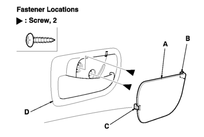
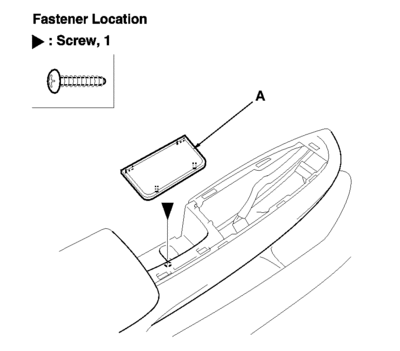
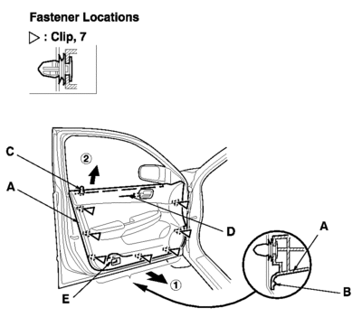
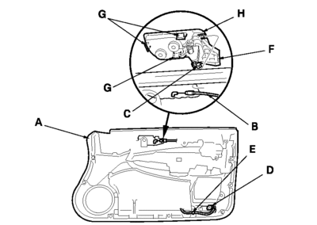

2005 Accord EX-L sedan. Hertz HCP 4 amp behind a front seat (on the rear floor), Scosche KPA8CC kit, Kenwood KFC-1666S in the front doors, butyl deadener. Written 2026-11-20.
Labels: VERIFIED = read in a real source. COMMUNITY = forums/listings, tips only. UNVERIFIED = not checked; check before relying on it.
Before anything:
Disconnect the battery negative before any wiring (you have the radio code).
Nothing goes under a front seat (VERIFIED: owner's manual p.27; seat sensors there, p.23). Stay away from yellow SRS connectors. Your SRS light is already on.
No drilling. If the firewall grommet can't be found, stop and ask.
Do this on a day off. Plan a full day (time UNVERIFIED). The car is drivable each night as long as the battery is reconnected and the doors are back together.
Have in hand first
Hertz HCP 4. It came with no speaker-level input plug (owner, 2026-11-20). The amp has both Speaker-In and RCA Pre-In inputs (VERIFIED: Hertz HCP 4 tech sheet, beps.it, read 2026-11-20). The Speaker-In connector type isn't on the sheet: photo the input end of the amp to identify it. Otherwise use RCA (D5).
Scosche KPA8CC (8 ga power + ground, remote wire, RCA, 50 A fuse holder per listing).
16 ga speaker wire, 25 ft (fronts only) or 50 ft (all 4). Measure with a string first.
Kenwood KFC-1666S pair. Metra 82-7806 brackets. Metra 72-7800 speaker harness (pair).
Door panel clips (spares; they break). Part number not looked up: Honda parts site by VIN.
Multimeter with a 10 A jack and AC volts. Solder, heat shrink, heat gun or lighter, ring terminals (8 ga).
Trim tools (you have HF 64126), screwdrivers, 10 mm socket, zip ties, Velcro or straps for the amp.
Add-a-circuit fuse tap: only if you use RCA inputs and Eonon wire #7 turns out not to be a remote turn-on.
Videos to watch first
COMMUNITY. Found by search 2026-11-20; titles only, not watched by Claude. Check each is a 2003–07 sedan (coupe doors differ). Videos show how it's done, never specs.
Screw count: a Honda-Tech poster says 4 screws (2 behind the handle flap); Chilton shows 3 (2 handle + 1 pull pocket). Chilton ranks higher; check for an extra one before prying.
Leave the door panels off until the amp is working, so you can test each speaker before closing up.
A. Front door panel off (each door)
VERIFIED: Chilton Library, Body > Front Doors > Front Door Panel Removal/Installation, printed 2026-11-20 (sources/chilton/front-door-panel-hybrid-2026-11-20.pdf). The article is listed for the 2005–07 Accord Hybrid only. The Hybrid is an Accord sedan, but that its door panel matches the 2.4 L EX-L is UNVERIFIED. If something on your door doesn't match a step, stop and look. Diagrams are the owner's Chilton screenshots (2026-11-20), saved in sources/chilton/front-door-panel-img/.
Chilton lists a KTC trim tool set and a "trim pad remover" (Snap-on A 177A or equivalent). Your HF trim tools (64126) include a forked clip remover that does the same job (COMMUNITY).
Battery negative off. Lower the glass fully.
Inner handle cover: with a trim tool, pry out on the rear part of the cover to release its hooks. Remove the cover, then the 2 screws holding the inner handle. The cover (A) has a hook at its rear corner (B) and its lower edge (C).

Handle cover A with hooks B and C; 2 screws (black triangles) hold the inner handle D (Chilton)
Power window switch panel: pry up on its rear edge to release the rear clip. Pull out along the edge to release the hooks and the front clip. Unplug the window switch connector, and on the driver's door the mirror switch connector too. Driver side: 2 clips at the ends, 4 hooks (B) along the edge, mirror switch connector C and window switch connector D
Passenger switch panel A: 2 clips (triangles, one at each end), hooks B along the edge, window switch connector D (Chilton)
Remove the screw under the pull pocket cap: pop the cap (A) out, 1 screw under it.

Pull pocket cap A, 1 screw (black triangle) under it (Chilton)
Remove the mirror mount cover (the inside triangle by the mirror). Chilton links a separate article for this, which wasn't printed. It's normally clips only (UNVERIFIED).
Panel off, bending it as little as possible:
Start at the bottom edge. Release the clips just above the marks on the edge of the panel with the clip remover.
Detach the upper clips.
Starting at the rear, lift the panel up and over the lock knob.

7 clips (white triangles) around the bottom and sides. 1 = pull the bottom out first, 2 = then lift up. C = lock knob, D = handle cable, E = courtesy light. Inset: pry at mark B on the panel edge (Chilton)
Don't lift it far. The inner handle cable and the courtesy light socket are still attached, and pulling too far damages the cable.
Hold the panel away from the door. Unhook the handle cable from its joint bushing, unplug the courtesy light socket, release the harness clip, then remove the panel. Check the joint bushing for damage.

Back of the panel: handle cable B in joint bushing C, courtesy light D, harness clip E, inner handle F with hooks G and H (Chilton)
Peel back the plastic cover (vapor barrier) only as far as you need. Keep it intact.
Putting it back (Chilton):
Replace any clip that's damaged or stress-whitened (white marks on the plastic).
Check that every connector, the handle cable and the light socket are hooked up.
Check that the window and power locks work.
Plastic cover: install it properly and seal it around its whole outside edge, so water stays out. If the old sealant won't stick, use butyl tape (COMMUNITY).
Driver's door: do the power window control unit reset. Chilton links that steps article, but it wasn't printed. Honda's method from an accessory install sheet: hold the switch down until the window is fully open, then pull it up until fully closed and hold for 2 seconds (VERIFIED: Honda install sheet AII 24050, in switch-slot-ideas/research/slot_facts_oem_switches.md). Do this anyway after the battery has been disconnected.
Check for water leaks: run a hose over the window and look for water inside.
B. Sound deadening (each door)
COMMUNITY (general car-audio practice).
Work warm. Butyl sticks badly in the cold. Warm the metal and the sheets with a heat gun or hair dryer, and work in a garage if you can.
Clean the metal with isopropyl alcohol. It must be dry and free of oil and dust.
Reach through the access holes and stick pieces to the outer skin right behind the speaker opening first. That spot does the most good. About 25–50% coverage of the outer skin is plenty.
Roll every piece hard with the roller, so there are no bubbles or loose edges.
Keep clear of: the window glass path, the window regulator and its rails, the lock rods and cables, and the drain holes at the bottom of the door. Water must still drain out.
Optional: cover the small holes in the inner skin near the speaker to make the door a better box. Leave the big service holes coverable by the vapor barrier.
Run the window up and down and test the locks and handle before anything else goes back.
C. Kenwood speaker in (each door)
Remove the factory speaker and frame (hardware type UNVERIFIED: screws or clips). Unplug it. Keep the factory speakers in a bag for resale.
Depth check: with the window down, measure from the mounting surface to the glass or track. Owners report about 2 in (COMMUNITY). The Kenwood is 1-11/16 to 1-3/4 in deep (retailer listings, COMMUNITY). If it hits, stop.
Check the Kenwoods: no torn surrounds and no scraping when you gently push the cone in.
Screw the Kenwood to the Metra 82-7806 bracket. Mount the bracket in the factory spot. No drilling is needed per Metra (COMMUNITY: metraonline.com). Confirm with the bracket in hand.
Plug the Metra 72-7800 harness into the factory speaker plug (fit on the front doors not confirmed; compare with the old plug). Connect the harness to the Kenwood + to +, − to −. If the harness has bare ends, solder and heat-shrink them.
Don't put the panel on yet. Test after the amp is in (Part E).
No new wire goes into the doors. The factory wires already run from the radio to the doors.
D. Amp wiring
Signal path: Eonon speaker outputs → amp speaker-level inputs. Amp outputs → the wires that go to the car's speakers, at the Eonon adapter harness behind the radio. You splice between the Eonon harness and the adapter harness, not into factory wires (COMMUNITY method). All splices soldered and heat-shrunk.
D1. Mount the amp
Rear floor behind a front seat. Not under the seat, and clear of the seat rails with the seat all the way back.
Leave an air gap around it. The HCP 4 is a Class AB amp and runs warm. Don't cover it with a floor mat. Its size is 12.4 × 7.5 × 2 in (listing, COMMUNITY).
Hold it down with heavy Velcro or straps so it can't slide. No drilling.
D2. Power wire (KPA8CC red, 8 ga)
Battery still disconnected. Leave the fuse out of the holder until the very end.
Find the driver-side firewall grommet above the pedals (COMMUNITY: caraudio.com and honda-tech threads; not confirmed on this car). Poke a small hole through the rubber, not the metal. Feed the wire through and seal around it.
Mount the fuse holder within 18 in of the battery + (standard practice). The amp has 2 × 20 A fuses on board and draws up to 21 A at 2 Ω (VERIFIED: Hertz HCP 4 tech sheet, beps.it, read 2026-11-20). Use a 40 A fuse at the battery instead of the kit's 50 A: it matches the amp and protects the CCA wire better (COMMUNITY sizing practice).
Route inside under the sill trim (door threshold) to the amp. Keep power on one side of the car and the speaker/signal wires on the other side to avoid noise (COMMUNITY). Cross at a right angle if you have to.
Keep it away from the pedals and any moving parts. Zip-tie it.
D3. Ground (KPA8CC black, 8 ga)
As short as possible, to a factory body bolt near the amp. Never a seat-belt anchor bolt.
Scrape the paint to bare metal under the ring terminal. Bolt it tight, then touch up the edge with paint to stop rust.
D4. Remote turn-on (KPA8CC blue)
Using Speaker-In: skip this. The HCP 4 has selectable ART, Automatic Remote Turn-On/Off, which works on Speaker-In only: the amp turns on when it senses the radio signal (VERIFIED: Hertz HCP 4 tech sheet, beps.it, read 2026-11-20). Turn ART on with its switch. No blue wire needed.
Using RCA: Eonon wire #7 "AMP" (currently capped) might be a remote output (UNVERIFIED). Test it: radio on = about 12 V DC to ground, radio off = 0 V.
If it passes, solder blue to #7 and run it to the amp's REM terminal.
If not, use an add-a-circuit fuse tap on a key-on fuse (fuse #9, accessory sockets, 15 A, VERIFIED: owner's manual p.103/269) for the blue wire only.
D5. Speaker wiring
Pull the Eonon out of the dash. Find the 4 speaker pairs between the Eonon harness and the adapter harness (FL, FR, RL, RR; + and −). Use the harness color chart.
Cut only between the two aftermarket harnesses. Eonon side → 16 ga run to the amp's inputs (speaker-level plug). Car side → 16 ga run from the amp's outputs.
No Speaker-In plug? Two ways: (1) RCA: if the Eonon has RCA pre-outs (UNVERIFIED), run RCA cables to Pre-In (0.6–5 V). The kit has one pair; 4 channels need a second pair. That skips the Eonon-side speaker run. (2) Find the right Speaker-In plug or pigtail for the amp. Photo the input end first. Speaker-In takes 1.5–12 V RMS (Hertz tech sheet), so the Eonon's speaker outputs are in range.
Label every wire at both ends with tape (FL+, FL−...). Keep + and − straight. A swapped pair kills bass.
Front doors only? Amp outputs ch 1–2 to the fronts. Leave the rears straight-through from the Eonon and adjust the fader.
Run the speaker wires on the side opposite the power wire.
D6. Amp settings before power-up
Gain all the way down.
Crossover: front and rear channels each have a FULL setting, plus HPF 80 Hz and LPF 50–500 Hz (VERIFIED: Hertz HCP 4 tech sheet, beps.it, read 2026-11-20). With no sub, set both to FULL. Once a sub is added, set the doors to HPF 80 Hz. Mono switches off. Bass boost (0/6/12 dB) at 0.
Bass boost off.
E. Power up, test, set gain
Double-check: no bare wire touching metal, ground tight, fuse still out.
Reconnect the battery negative. Put the fuse in last.
Radio on: the amp's power light should come on. Radio off: the light must go off.
Low volume. Use the balance and fader to check each speaker plays from the right spot.
Set the gain with the multimeter (COMMUNITY method):
Unplug the speakers from the amp outputs.
Play a 1 kHz 0 dB test tone (a free download). Eonon EQ flat, loudness/bass off, volume at about 3/4 of max (the loudest you'll actually use).
Meter on AC volts across one channel's output.
Target for the Kenwoods (30 W RMS, 4 Ω): √(30 × 4) = about 11 V AC. Turn the gain up until it reads that, and no higher.
Repeat for each channel pair. Reconnect the speakers.
Listen for distortion at high volume. If you hear it, back the gain off.
Battery drain check (you had drains in September): with everything off and the doors closed, wait about 30 min. Then measure current with the meter in series on the negative cable (10 A jack). The amp should add nothing when off. Your notes have the draw-test steps.
Last: put the vapor barrier back sealed, replace broken clips, hook the handle cable on, plug in the window switch, and press the panel on. Test the windows, locks and handles.
What I couldn't verify
Item
Free way to check
Front door panel: Chilton article is Hybrid-only; mirror-cover and window-reset sub-articles not captured
Chilton: open the linked "mirror mount cover" and "power window control unit reset" articles and screenshot them, pictures included
Hertz Speaker-In connector type (plug missing)
Photo the amp's input end. A replacement plug or bare-wire pigtail may exist; otherwise use RCA.
Eonon #7 is remote turn-on (only matters with RCA)
Multimeter test (D4)
Firewall grommet location
Look above the driver pedals with a flashlight
Door depth vs Kenwood depth
Measure with the window down
Metra 72-7800 fits the front door plug
Compare with the factory plug
Speaker wire length
String from the amp spot to the radio opening
Job time
Not known. Plan a full day off.
Sources: owner's manual p.23, 27, 103, 269 (VERIFIED, in repo); Chilton front door panel article, 2005–07 Accord Hybrid (sources/chilton/front-door-panel-hybrid-2026-11-20.pdf); mods/README.md and mods/plan-front-speakers-2026-11.md for parts and specs.